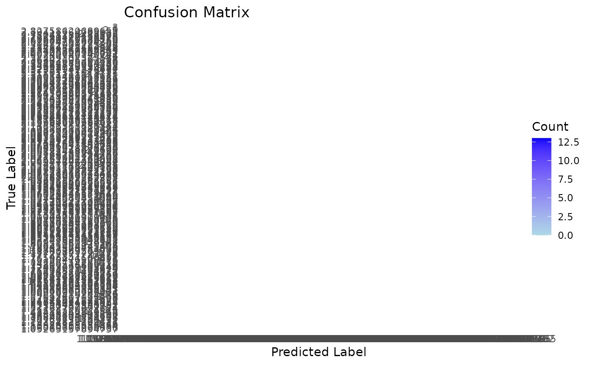

carpackage-usage
carpackage-usage.Rmd
library(carpackage)
library(tidyverse)
#> ── Attaching core tidyverse packages ──────────────────────── tidyverse 2.0.0 ──
#> ✔ dplyr 1.1.4 ✔ readr 2.1.5
#> ✔ forcats 1.0.0 ✔ stringr 1.5.1
#> ✔ ggplot2 3.5.2 ✔ tibble 3.2.1
#> ✔ lubridate 1.9.4 ✔ tidyr 1.3.1
#> ✔ purrr 1.0.4
#> ── Conflicts ────────────────────────────────────────── tidyverse_conflicts() ──
#> ✖ dplyr::filter() masks stats::filter()
#> ✖ dplyr::lag() masks stats::lag()
#> ℹ Use the conflicted package (<http://conflicted.r-lib.org/>) to force all conflicts to become errorsOverview
This vignette demonstrates how to use the carpackage R
package to clean, prepare, and model car safety data using a k-Nearest
Neighbors (kNN) classifier. These steps mirror the workflow used in our
DSCI 310 final project.
1. Load and Clean the Data
# Read car dataset
df <- car_data
# Assign column names (as per UCI dataset)
colnames(df) <- c("buying", "maint", "doors", "persons", "lug_boot", "safety", "class")
# Check NAs and duplicates
df_clean <- check_data_quality(df)
#> Missing values found: 0
#> Duplicate rows found: 0
#> Cleaning completed. Returned cleaned dataframe.
head(df_clean)
#> buying maint doors persons lug_boot safety class
#> 1 buying maint doors persons lug_boot safety class
#> 2 vhigh vhigh 2 2 small low unacc
#> 3 vhigh vhigh 2 2 small med unacc
#> 4 vhigh vhigh 2 2 small high unacc
#> 5 vhigh vhigh 2 2 med low unacc
#> 6 vhigh vhigh 2 2 med med unacc2. Encode Ordinal Categorical Variables
# Encode ordinal variables into numeric format
df_encoded <- df %>%
mutate(across(-safety, encode_levels)) %>%
mutate(safety = encode_safety(safety))
head(df_encoded)
#> buying maint doors persons lug_boot safety class
#> 1 NA NA NA NA NA NA NA
#> 2 4 4 2 2 1 1 1
#> 3 4 4 2 2 1 2 1
#> 4 4 4 2 2 1 3 1
#> 5 4 4 2 2 2 1 1
#> 6 4 4 2 2 2 2 13. Summarize and Visualize the Data
# View class distribution and key feature summaries
summary_table <- summarize_data(df_encoded)
#> buying maint doors persons lug_boot
#> Min. :1.00 Min. :1.00 Min. :2.00 Min. :2.000 Min. :1
#> 1st Qu.:1.75 1st Qu.:1.75 1st Qu.:2.75 1st Qu.:2.000 1st Qu.:1
#> Median :2.50 Median :2.50 Median :3.50 Median :4.000 Median :2
#> Mean :2.50 Mean :2.50 Mean :3.50 Mean :3.667 Mean :2
#> 3rd Qu.:3.25 3rd Qu.:3.25 3rd Qu.:4.25 3rd Qu.:5.000 3rd Qu.:3
#> Max. :4.00 Max. :4.00 Max. :5.00 Max. :5.000 Max. :3
#> NA's :1 NA's :1 NA's :1 NA's :1 NA's :1
#> safety class
#> Min. :1 Min. :1.000
#> 1st Qu.:1 1st Qu.:1.000
#> Median :2 Median :1.000
#> Mean :2 Mean :1.415
#> 3rd Qu.:3 3rd Qu.:2.000
#> Max. :3 Max. :4.000
#> NA's :1 NA's :1
print(summary_table)
#> buying maint doors persons lug_boot
#> Min. :1.00 Min. :1.00 Min. :2.00 Min. :2.000 Min. :1
#> 1st Qu.:1.75 1st Qu.:1.75 1st Qu.:2.75 1st Qu.:2.000 1st Qu.:1
#> Median :2.50 Median :2.50 Median :3.50 Median :4.000 Median :2
#> Mean :2.50 Mean :2.50 Mean :3.50 Mean :3.667 Mean :2
#> 3rd Qu.:3.25 3rd Qu.:3.25 3rd Qu.:4.25 3rd Qu.:5.000 3rd Qu.:3
#> Max. :4.00 Max. :4.00 Max. :5.00 Max. :5.000 Max. :3
#> NA's :1 NA's :1 NA's :1 NA's :1 NA's :1
#> safety class
#> Min. :1 Min. :1.000
#> 1st Qu.:1 1st Qu.:1.000
#> Median :2 Median :1.000
#> Mean :2 Mean :1.415
#> 3rd Qu.:3 3rd Qu.:2.000
#> Max. :3 Max. :4.000
#> NA's :1 NA's :14. Run the kNN Classifier
# Train/test split
df_clean <- df_encoded %>%
na.omit() %>%
distinct()
data_splitted <- split_data(df_clean, response_col = "safety", prop = 0.8)
knn_results <- cross_validate_knn(data_splitted$train_x, data_splitted$train_y)
#> Loading required package: lattice
#>
#> Attaching package: 'caret'
#> The following object is masked from 'package:purrr':
#>
#> lift
# Check predictions
head(knn_results)
#> k accuracy
#> 1 1 0.3333115
#> 2 3 0.4599483
#> 3 5 0.4541563
#> 4 7 0.4649580
#> 5 9 0.4627972
#> 6 11 0.47652105. Evaluate Model Performance with best parameters
# Pick best k
best_row <- knn_results[which.max(knn_results$accuracy), ]
best_k <- best_row$k
# Train final model
final_model <- train_final_model(data_splitted$train_x, data_splitted$train_y, best_k)
# Predict on test set
predictions <- predict(final_model, data_splitted$test_x)
# Calculate accuracy and view confusion matrix
performance <- compute_test_accuracy(predictions, data_splitted$test_y)
performance
#> [1] 0.026086966. Visualize the Confusion Matrix
# Plot a heatmap-style confusion matrix
plot_conf_matrix(predictions, data_splitted$test_y)